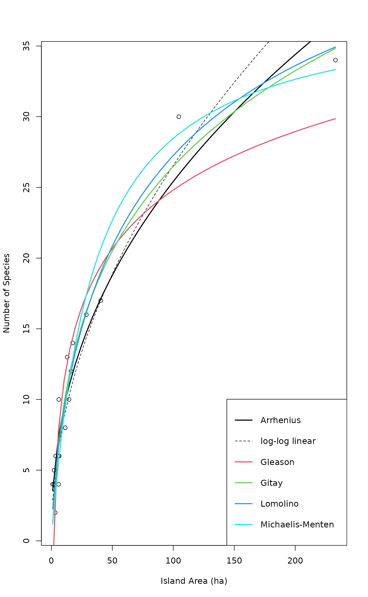

SSarrhenius.RdThese functions provide self-starting species-area models for
non-linear regression (nls). They can also be used for
fitting species accumulation models in
fitspecaccum. These models (and many more) are reviewed
by Dengler (2009).
SSarrhenius(area, k, z) SSgleason(area, k, slope) SSgitay(area, k, slope) SSlomolino(area, Asym, xmid, slope)
| area | Area or size of the sample: the independent variable. |
|---|---|
| k, z, slope, Asym, xmid | Estimated model parameters: see Details. |
All these functions are assumed to be used for species richness (number of species) as the independent variable, and area or sample size as the independent variable. Basically, these define least squares models of untransformed data, and will differ from models for transformed species richness or models with non-Gaussian error.
The Arrhenius model (SSarrhenius) is the expression
k*area^z. This is the most classical model that can be found in
any textbook of ecology (and also in Dengler 2009). Parameter z
is the steepness of the species-area curve, and k is the
expected number of species in a unit area.
The Gleason model (SSgleason) is a linear expression
k + slope*log(area) (Dengler 200). This is a linear model,
and starting values give the final estimates; it is provided to
ease comparison with other models.
The Gitay model (SSgitay) is a quadratic logarithmic expression
(k + slope*log(area))^2 (Gitay et al. 1991, Dengler
2009). Parameter slope is the steepness of the species-area
curve, and k is the square root of expected richness in a unit
area.
The Lomolino model (SSlomolino) is
Asym/(1 + slope^log(xmid/area)) (Lomolino 2000, Dengler 2009).
Parameter Asym is the asymptotic maximum number of species,
slope is the maximum slope of increase of richness, and
xmid is the area where half of the maximum richness is
achieved.
In addition to these models, several other models studied by Dengler
(2009) are available in standard R self-starting models:
Michaelis-Menten (SSmicmen), Gompertz
(SSgompertz), logistic (SSlogis), Weibull
(SSweibull), and some others that may be useful.
Numeric vector of the same length as area. It is the value of
the expression of each model. If all arguments are names of objects
the gradient matrix with respect to these names is attached as an
attribute named gradient.
Dengler, J. (2009) Which function describes the species-area relationship best? A review and empirical evaluation. Journal of Biogeography 36, 728--744.
Gitay, H., Roxburgh, S.H. & Wilson, J.B. (1991) Species-area relationship in a New Zealand tussock grassland, with implications for nature reserve design and for community structure. Journal of Vegetation Science 2, 113--118.
Lomolino, M. V. (2000) Ecology's most general, yet protean pattern: the species-area relationship. Journal of Biogeography 27, 17--26.
## Get species area data: sipoo.map gives the areas of islands data(sipoo, sipoo.map) S <- specnumber(sipoo) plot(S ~ area, sipoo.map, xlab = "Island Area (ha)", ylab = "Number of Species", ylim = c(1, max(S)))#> Nonlinear regression model #> model: S ~ SSarrhenius(area, k, z) #> data: sipoo.map #> k z #> 3.4062 0.4364 #> residual sum-of-squares: 78.1 #> #> Number of iterations to convergence: 5 #> Achieved convergence tolerance: 1.056e-06#>#> 2.5% 97.5% #> k 2.6220312 4.3033906 #> z 0.3813576 0.4944693## draw a line xtmp <- with(sipoo.map, seq(min(area), max(area), len=51)) lines(xtmp, predict(marr, newdata=data.frame(area = xtmp)), lwd=2)## The normal way is to use linear regression on log-log data, ## but this will be different from the previous: mloglog <- lm(log(S) ~ log(area), data=sipoo.map) mloglog#> #> Call: #> lm(formula = log(S) ~ log(area), data = sipoo.map) #> #> Coefficients: #> (Intercept) log(area) #> 1.0111 0.4925 #>## Gleason: log-linear mgle <- nls(S ~ SSgleason(area, k, slope), sipoo.map) lines(xtmp, predict(mgle, newdata=data.frame(area=xtmp)), lwd=2, col=2)## Gitay: quadratic of log-linear mgit <- nls(S ~ SSgitay(area, k, slope), sipoo.map) lines(xtmp, predict(mgit, newdata=data.frame(area=xtmp)), lwd=2, col = 3)## Lomolino: using original names of the parameters (Lomolino 2000): mlom <- nls(S ~ SSlomolino(area, Smax, A50, Hill), sipoo.map) mlom#> Nonlinear regression model #> model: S ~ SSlomolino(area, Smax, A50, Hill) #> data: sipoo.map #> Smax A50 Hill #> 53.493 94.697 2.018 #> residual sum-of-squares: 55.37 #> #> Number of iterations to convergence: 6 #> Achieved convergence tolerance: 9.715e-07## One canned model of standard R: mmic <- nls(S ~ SSmicmen(area, slope, Asym), sipoo.map) lines(xtmp, predict(mmic, newdata = data.frame(area=xtmp)), lwd =2, col = 5)legend("bottomright", c("Arrhenius", "log-log linear", "Gleason", "Gitay", "Lomolino", "Michaelis-Menten"), col=c(1,1,2,3,4,5), lwd=c(2,1,2,2,2,2), lty=c(1,2,1,1,1,1))## compare models (AIC) allmods <- list(Arrhenius = marr, Gleason = mgle, Gitay = mgit, Lomolino = mlom, MicMen= mmic) sapply(allmods, AIC)#> Arrhenius Gleason Gitay Lomolino MicMen #> 83.49847 96.94018 80.54984 79.30718 83.02003